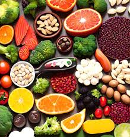

វីតាមីនបេ១ ឬវីតាមីនសតិស្មារតី មានតួនាទីពិសេសៗ ចូលរួមក្នុងការផ្លាស់ប្ដូរជាតិស្ករ សារធាតុខ្លាញ់ និងជាតិអាល់កុល (ស្រា) ទៅជាថាមពល ជំនួយប្រព័ន្ធសរសៃប្រសាទមានភាពប្រសើរឡើង ធ្វើឱ្យសតិស្មារតី និងសតិ បញ្ញាល្អប្រសើរ ។ ព្រមទាំងជួយឱ្យរបួសស្នាម និងសម្លាក់ឆាប់ជាសះស្បើយផងដែរ ។
-របបអាហារូបត្ថម្ភប្រចាំថ្ងៃរបស់វីតាមីនបេ១ គឺលោកអ្នកត្រូវទទួលទានវីតាមីនបេ១ ក្នុងបរិមាណចំនួនពី ១,៣ មីលីក្រាម សម្រាប់បុរស, និង ១,១ មីលីក្រាម សម្រាប់ស្ដ្រី, និង ១,៨ មីលីក្រាមសម្រាប់ស្ដ្រីមានផ្ទៃពោះ និងស្ដ្រីដែលកំពុងបំបៅដោះកូន ។

-បើលោកអ្នកទទួលទានវីតាមីនបេ ១ មិនគ្រប់គ្រាន់ អាចបណ្ដាលឱ្យកើតជម្ងឺហើមខ្លួន (ជម្ងឺនេះកើតមានច្រើននៅសម័យខ្មែរក្រហម បច្ចុប្បន្ននេះមិនសូវមានទៀតនោះទេ) អស់កម្លាំង សាច់ដុំជ្រាយ ស្ពឺកដៃជើង រលាកប្រព័ន្ធប្រសាទ មិនឃ្លានអាហារ វិបត្ដិផ្លូវរំលាយអាហារ វិបត្ដិសតិអារម្មណ៍ ឬការចងចាំ និងសភាពឆ្លេឆ្លាជាដើម ។
-ចំណីអាហារដែលសម្បូរវីតាមីនបេ១ គឺគ្រាប់ធញ្ញជាតិទាំងមូល បន្លែផ្លែឈើ ស៊ុតពណ៌លឿង ជាតិមេឬមេស្រាបៀរ សាច់សត្វស្លាប និងសាច់ត្រី។
-ក្រុមមនុស្សដែលត្រូវការវីតាមីនបេ១ គឺ អ្នកដែលពិសាសុរា ឬប្រមឹកស្រា អ្នកចូលចិត្ដពិសាកាហ្វេ ឬអ្នកជក់បារី ។ អ្នកស្ដ្រេស្ស ឬតានតឹងចិត្ដខ្លាំង អ្នកកីឡាករ អ្នកជម្ងឺទឹកនោមផ្អែម និងអ្នកកើតជម្ងឺពកក ឬ ជម្ងឺក្រពេញទីរ៉ូអ៊ីដនៅបំពង់ក។ អ្នកជម្ងឺស្ពឹកមុខ វៀចមុខ រលាកសរសៃប្រសាទភ្នែក និងជម្ងឺប្រព័ន្ធប្រសាទ គឺជាក្រុមមនុស្ស ដែលចាំបាច់ត្រូវការជំនួយសុខភាពបន្ថែម ពីគ្រាប់ថ្នាំវីតាមីនបេ១ ៕
វីតាមីននេះ នឹងត្រូវបំផ្លាញបានដោយងាយ នៅពេលត្រូវកម្ដៅ និងអុកស៊ីសែន ឬក្នុងពេលដាំស្ល ក៏ធ្វើឲ្យវីតាមីននេះបាត់បង់ប្រមាណ៣០%ដែរ។
ដូច្នេះ មិនត្រូវលាងបន្លែយូរពេកទេ ហើយគួរប្រើវិធីចំហុយ។ វីតាមីន B1 មានច្រើននៅក្នុងសណ្ដែកគ្រប់ប្រភេទ អង្ករសំរូប កន្ទក់ សាច់ជ្រូក និងពងមាន់ ទា។
កង្វះវីតាមីន B1 : ធ្វើឲ្យការដុតបំផ្លាញកាបូអ៊ីដ្រាត មិនបានល្អ ធុញអាហារ ឆាប់មានអារម្មណ៍ឆេវឆាវ មួម៉ៅ អស់កម្លាំង ឬរមាស់ដៃជើង។ បើមានបញ្ហាកង្វះវីតាមីន B1 ច្រើន អាចធ្វើឲ្យខ្សោយបេះដូង និងដំបៅសាច់ដុំ។